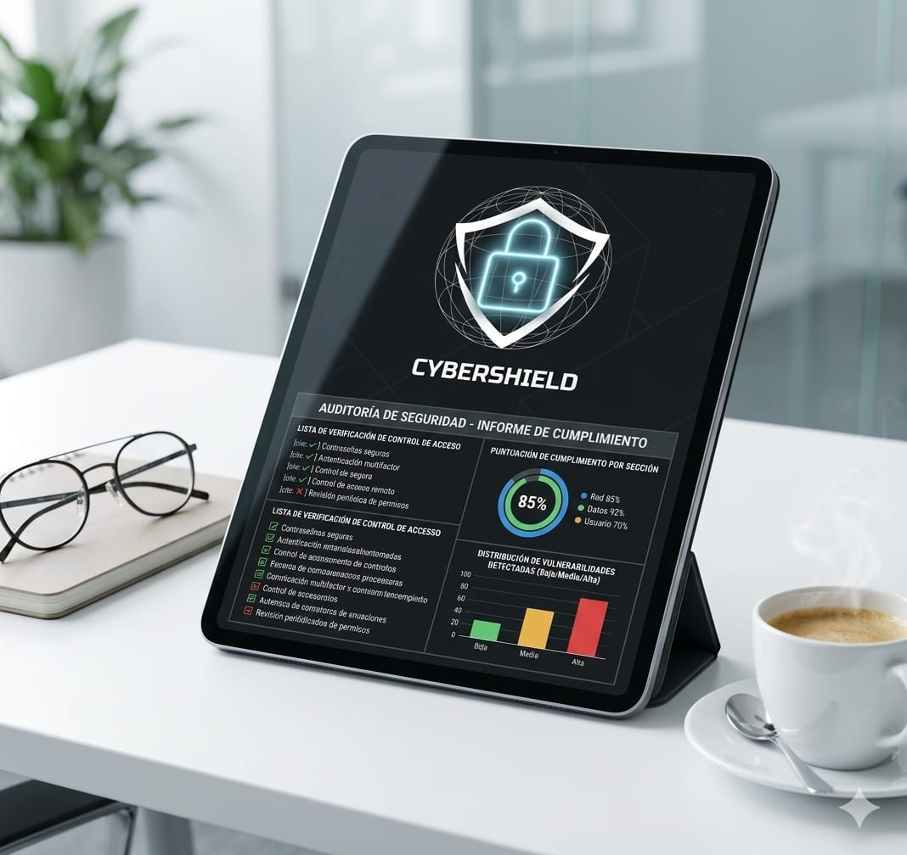
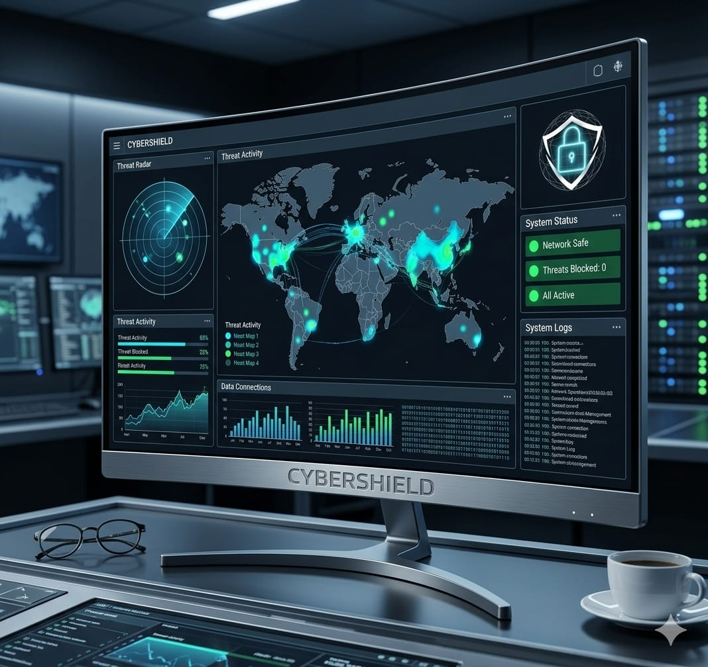
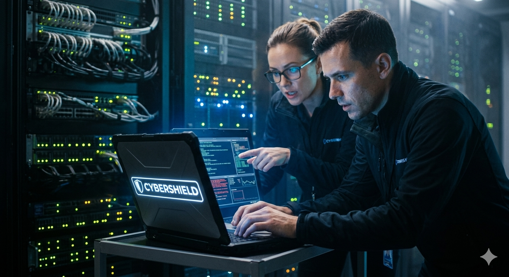
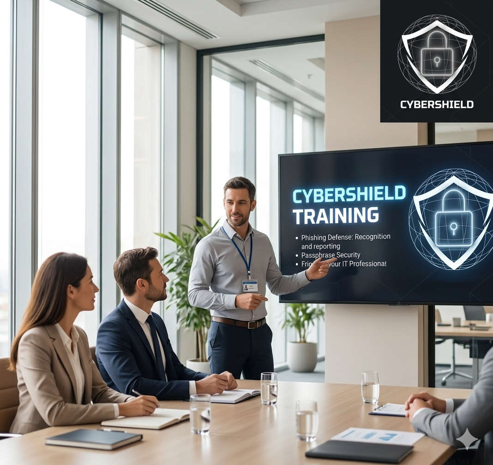

Nuestros Servicios
Auditoría de Seguridad Informática
Evaluamos la infraestructura tecnológica de la organización para identificar vulnerabilidades y proponer mejoras en los controles de seguridad.

Pruebas de Penetración (Pentesting)
Simulamos ataques controlados para detectar debilidades antes de que puedan ser explotadas por ciberdelincuentes.
Monitoreo de Amenazas 24/7

Supervisamos continuamente la red y los sistemas para detectar actividades sospechosas y responder oportunamente.
Respuesta a Incidentes

Actuamos rápidamente ante incidentes de seguridad para contener, investigar y mitigar los daños.
Capacitación en Ciberseguridad

Ofrecemos programas de formación para empleados y directivos con el fin de fortalecer la cultura de seguridad de la información.
Cumplimiento Normativo

Asesoramos en la adopción de estándares y marcos de referencia como ISO 27001, NIST y otras regulaciones aplicables.